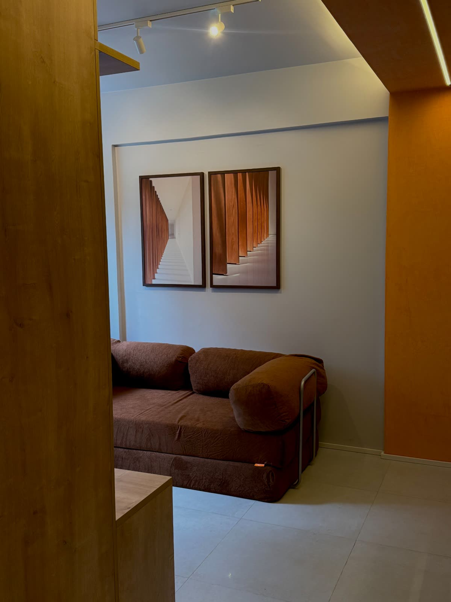
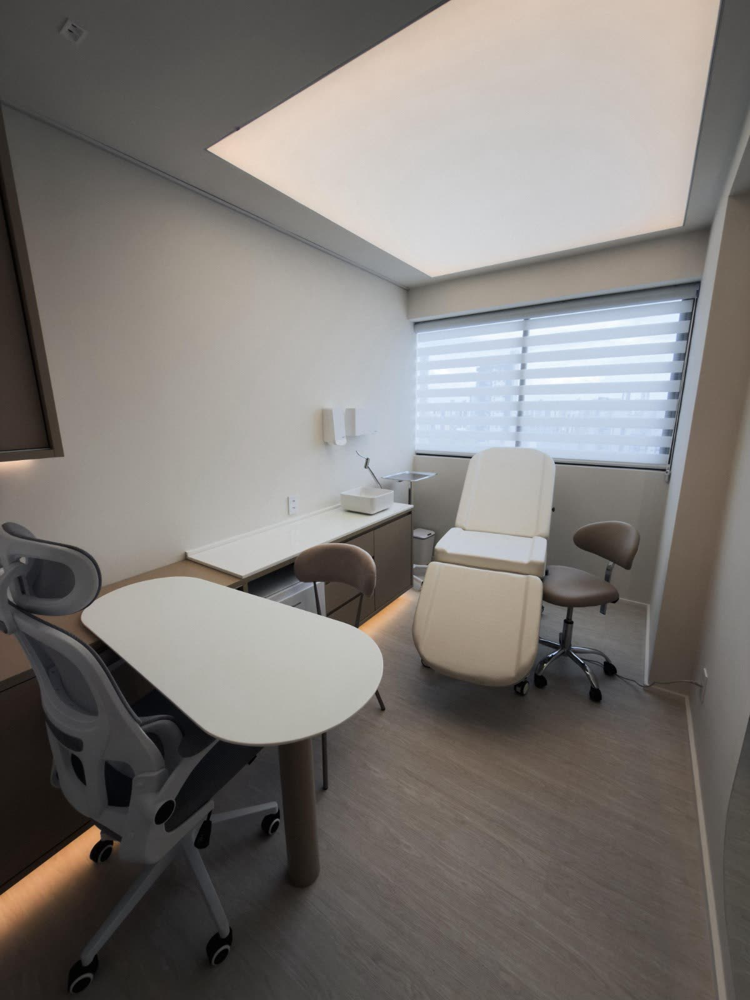
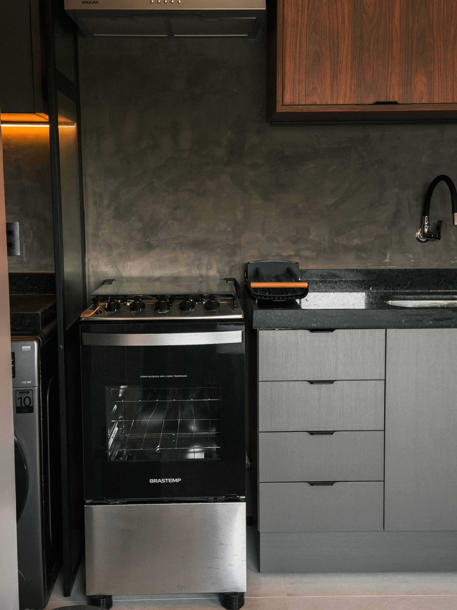
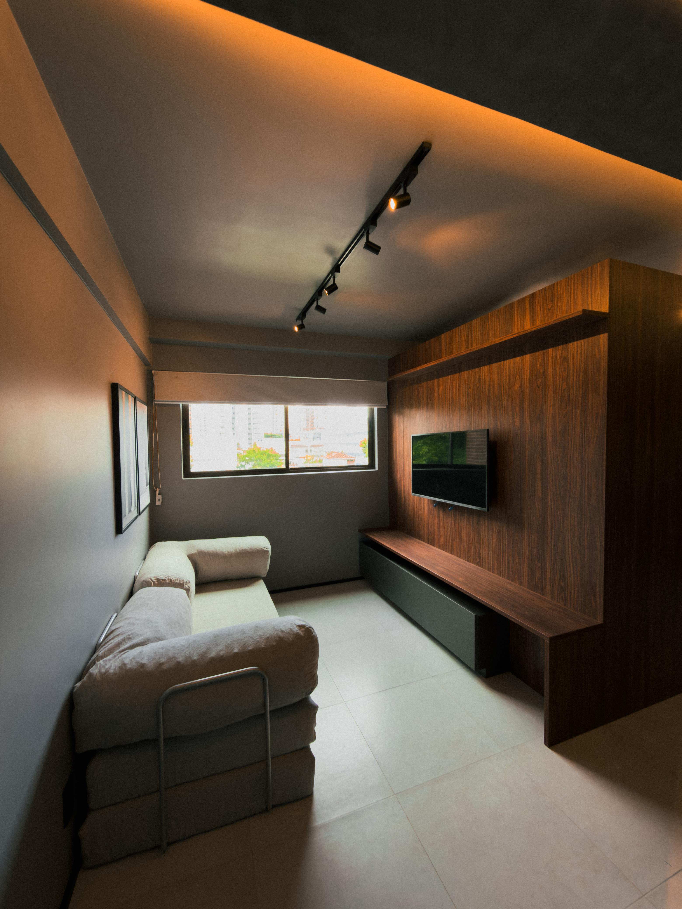
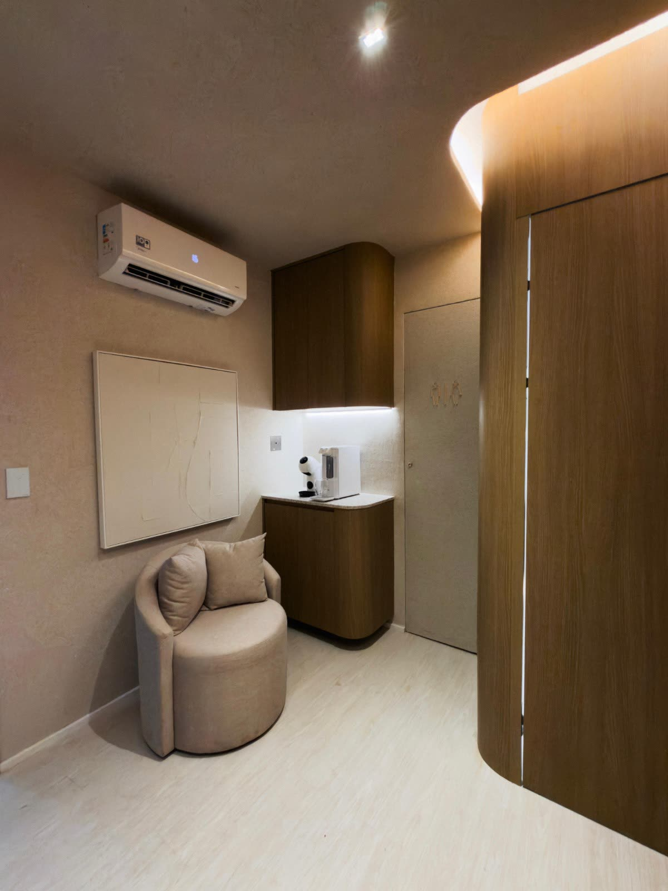
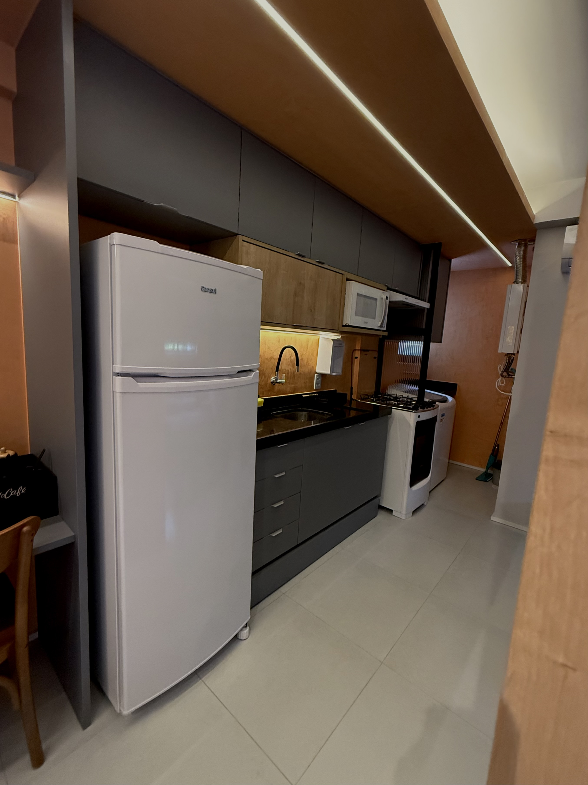
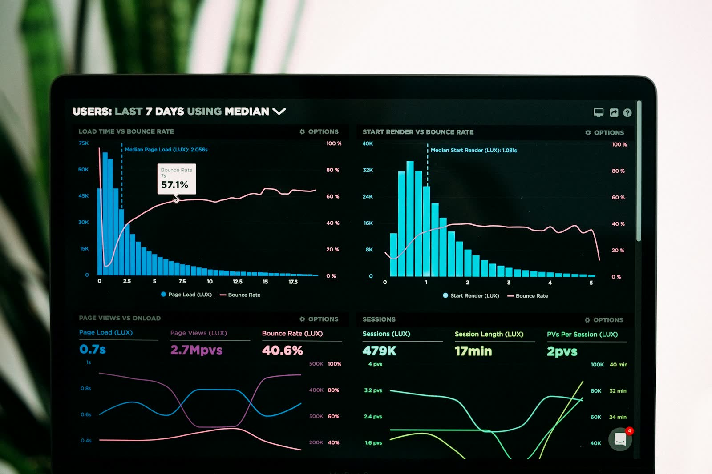
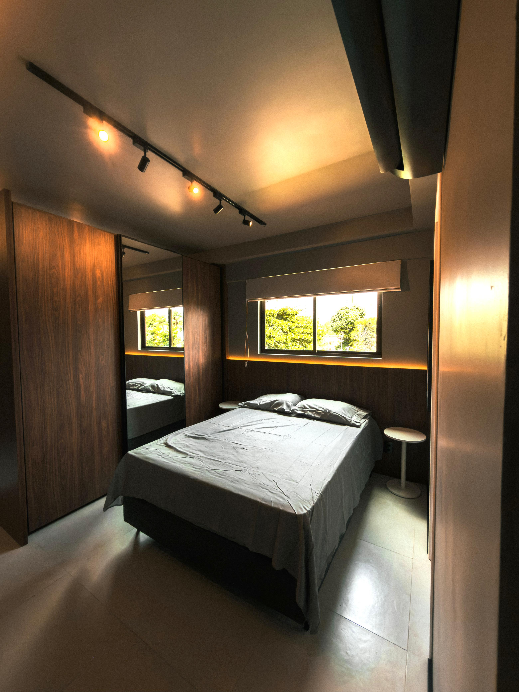
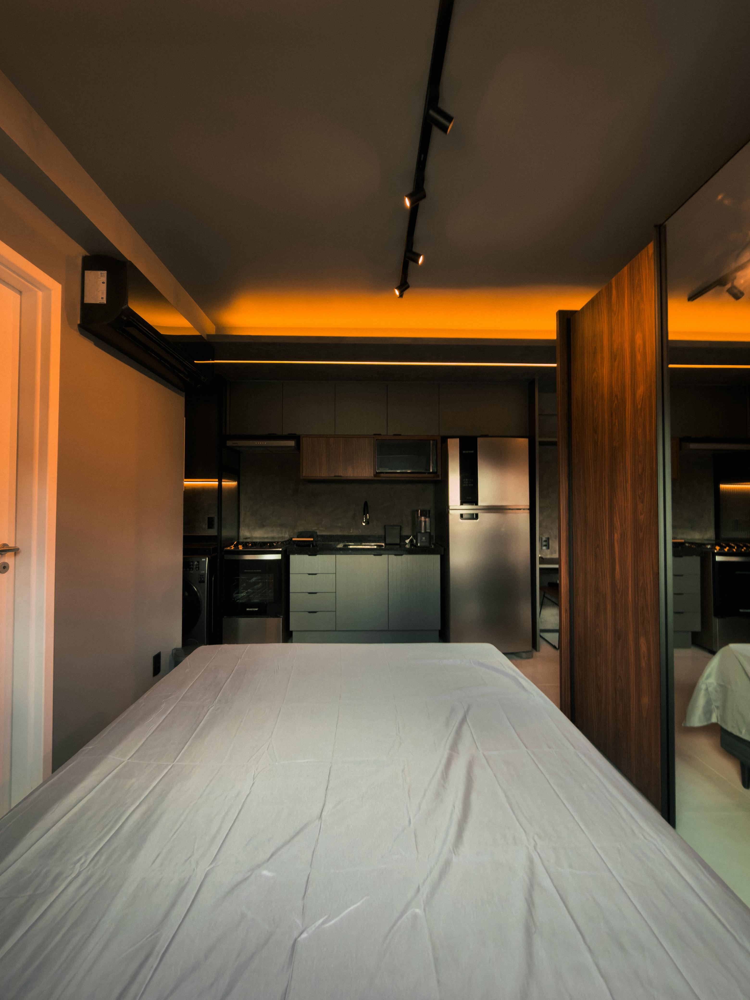

Mão de obra que não lê projeto.
O desenho diz uma coisa, o pedreiro faz outra — e quem paga a diferença é você.
UNUS Arquitetura · Recife / PE
Arquitetura, gestão de obra e curadoria de materiais sob uma única responsabilidade. Você decide. A gente entrega.
01 · Sobre
A UNUS nasceu de uma constatação simples: quem contrata arquitetura, depois precisa caçar pedreiro, depois precisa comprar material, depois precisa fiscalizar o que ninguém combinou direito.
No fim, o cliente vira o gerente da própria obra — sem ter assinado pra isso.
A UNUS faz o oposto. Você contrata uma vez. A gente assume do briefing à entrega da chave: projeto, execução, materiais, fornecedores, prefeitura. Uma responsabilidade. Uma assinatura. Um interlocutor.
Você não gerencia ninguém.
Você só recebe a obra pronta.
02 · O que termina aqui
O desenho diz uma coisa, o pedreiro faz outra — e quem paga a diferença é você.
Orçamento vira estimativa, estimativa vira "imprevisto", e o número final só aparece quando já foi gasto.
Marmoraria, eletricista, vidraceiro, marceneiro, paisagista — cada um com seu ritmo e suas desculpas.
Aquele detalhe mal resolvido que volta seis meses depois com infiltração, trinca ou desgaste prematuro.
Tudo isso desaparece quando a obra tem
um único responsável técnico do início ao fim.
03 · Responsabilidade única
A maioria dos escritórios entrega o projeto e some. A UNUS entrega a chave.

Você vê a obra antes da obra existir. Decide com clareza, não com promessa.

Arquitetura, elétrica, hidráulica, climatização. Tudo detalhado e compatibilizado.

Cada acabamento, cada metragem, cada marca. Sem espaço para troca silenciosa por opção mais barata.

Quanto, quando e por quê. Cronograma em contrato.

A UNUS coordena equipe, fornecedores e prazos. Você não precisa estar no canteiro.
Manifesto
Vai sem alma, sem propósito e sem presença. Cada cliente nasce de escuta, e cada obra envolve um repertório e a individualidade de quem vai vivê-la.
05 · Diferenciais exclusivos
Relatórios periódicos que comprovam, etapa por etapa, que a execução corresponde ao projeto aprovado. Você não precisa confiar — você tem a evidência.
Aprovações, alvarás, conformidades. A UNUS resolve a parte burocrática que trava obras.
Você não escolhe entre opções aleatórias. Recebe um menu curado por critério técnico e estético.
06 · Processo
Visita ao terreno ou ambiente. Diagnóstico, restrições legais, possibilidades reais.
Você vê antes de aprovar. Decisão informada, não apostada.
Tudo previsto. Tudo em contrato.
A UNUS toca a obra. Você recebe relatórios. No fim, recebe a chave.
07 · Cases

Residencial · Alto padrão
Projeto residencial completo com curadoria integral de marcenaria, iluminação cênica e acabamentos premium. Sala, quartos, cozinha e banheiros entregues sob única assinatura, da concepção à última peça instalada.

Comercial · Equipamento esportivo
Projeto de baias e estabulos para clube de golfe e hipismo, com ventilação técnica, conforto animal e identidade arquitetônica integrada ao paisagismo do clube. Compatibilização entre infraestrutura técnica e estética sob uma única responsabilidade.

Residencial · Reforma integrada
Reforma residencial com integração de ambientes, marcenaria sob medida e revisão completa das instalações. Da viabilidade técnica à entrega da chave, sem o morador precisar coordenar fornecedores ou cronograma.
08 · Depoimentos
"A UNUS assumiu a obra do início ao fim. Em nenhum momento precisei correr atrás de fornecedor ou orçamento — tudo previsto, tudo entregue."
"O cronograma foi cumprido. O orçamento foi cumprido. E o resultado é exatamente o que vi na maquete 3D. Era isso que eu procurava."
"Contratei a UNUS pra não virar gerente de obra. Era exatamente isso que eu queria evitar. E foi exatamente o que recebi."
Diferenciais
Um contrato, um interlocutor. Você não gerencia ninguém.
Cronograma e orçamento previstos. Sem "imprevisto" no meio.

Relatórios periódicos comprovam execução = projeto aprovado.
Fornecedores e materiais selecionados por critério técnico.
09 · Para quem é

10 · Garantia
A UNUS responde pela solidez e segurança da edificação por 5 anos, conforme o Código Civil brasileiro e a NBR 15575 (Norma de Desempenho).
Mas a verdade é simples: uma obra bem feita raramente cobra a garantia. A Fidelidade Digital existe pra que você não precise dela.
11 · FAQ
Cada projeto é dimensionado individualmente — área, complexidade, padrão de acabamento e prazo. O orçamento é fechado depois da viabilidade técnica e entra em contrato. Sem surpresa no meio do caminho.
[A CONFIRMAR — briefing menciona Recife/PE, mas não define se atendem fora da região.]
O prazo é definido na etapa de viabilidade técnica e formalizado em contrato. Cada projeto tem seu cronograma — e ele é cumprido com a Fidelidade Digital monitorando etapa por etapa.
[A CONFIRMAR — o diferencial é o chave-na-mão integrado; precisa definir se atendem projetos isolados.]
Provavelmente vai dar. A UNUS já viabilizou projetos com restrições técnicas, espaços compactos e exigências de norma considerados complexos por outros escritórios. A etapa de viabilidade técnica esclarece em poucas semanas o que é possível, com que custo e em que prazo.
Construtor executa. Arquiteto projeta. A UNUS faz as duas coisas, sob a mesma assinatura, com responsabilidade única e Fidelidade Digital comprovando execução = projeto.
Sim. Assessoria em órgãos reguladores está inclusa.

12 · Próxima obra
Conversa inicial sem compromisso. A gente entende seu projeto, sua expectativa, e diz com clareza se faz sentido seguir.
Conversar com a UNUS no WhatsAppResposta no horário comercial. Atendimento direto com a equipe técnica.